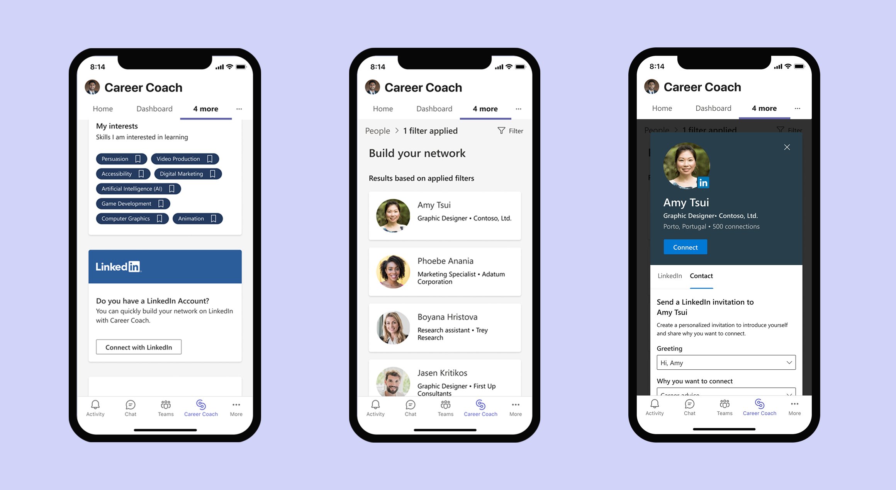

Case Study · Microsoft Education
Personalized guidance, at Microsoft's scale
From education products like Speaker Coach and Career Coach, to Windows products like Expressive Input Panel and Copilot, I had the opportunity to explore various consumer and enterprise design challenges through both a deep vertical and across horizontal ecosystem lens. I collaborated directly with talented researchers, product managers, and engineers on 0 to 1 products as well as new features for existing products.
Higher-ed students each arrive with a different education, skill set, and set of interests — but most career guidance tools give everyone the same generic advice. Career Coach's objective was to deliver guidance personalized to the individual student, so they could discover a career path, grow real-world skills, and build their network on their own terms. You can browse snippets of the shipped UI here.
